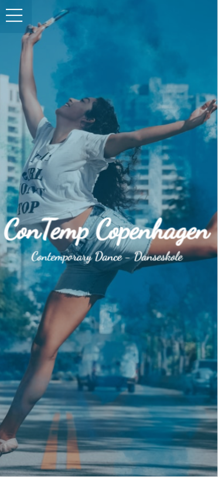
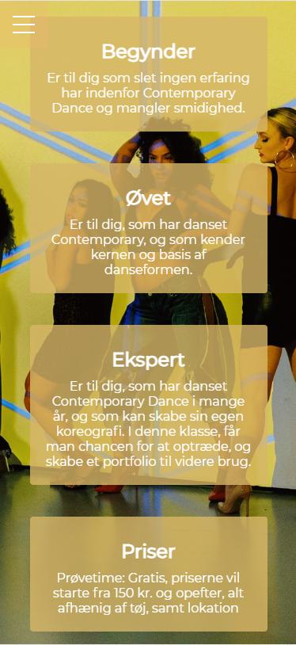

Design af hjemmeside - Kunde: Dansestudie
Genre: Contemporary

I dette projekt skulle vores team designe og kode en prototype af en mobile-first hjemmeside til et dansestudie. Studiet tilbød danseundervisning inden for genren Contemporary - en stilart der kombinerer flere genre, og i høj grad lader danseren udtrykke og fortolke gennem sine bevægelser. Comtemporary har et primært ungt publikum.

Min primære rolle i forløbet var at støtte op om kodeningen. Dette var mit første møde med html, og jeg lærte meget.